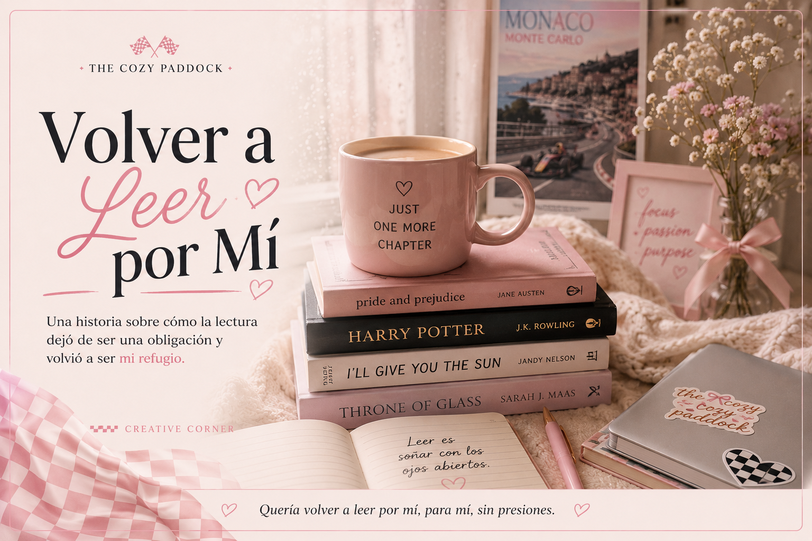

Volver a Leer por Mi
Desde que tengo memoria, yo leo. Creo que mis primeros recuerdos de mí, de niña disfrutando la lectura, son de cuando leí una novela que se llama Al Final de la Noche, de Fernando Gómez Campo. Disfruté tanto ese libro que, aún hoy, con 36 años, lo conservo conmigo.
Sin embargo, durante muchos años la lectura estuvo más relacionada con las tareas del colegio y con los libros que mi abuelo paterno se encargaba de poner en mis manos que con el puro placer de leer. Y entonces llegó Harry Potter.
Se podrán imaginar, o bueno, tal vez no se lo puedan imaginar, pero mi relación con los libros cambió por completo. Encontré un mundo que me enamoró. Como la saga llegó a mí cuando ya había tres libros publicados en español, me obsesioné rápidamente. Y después vino la insufrible espera por el cuarto libro.
Tengo incluso una anécdota muy clara de esa época. Tuvieron que conseguirme el libro en Puerto Rico porque en Colombia no lo encontrábamos. Una amiga tenía una hermana mayor viviendo allá y gracias a ella pude tenerlo en mis manos. Hoy parece una locura pensar en todo eso cuando podemos comprar casi cualquier libro con un clic, pero en ese momento fue toda una misión.
Con Harry llegó una sensación nueva para mí: sentir que algo me faltaba cuando no estaba leyendo. Era la primera vez que un libro me provocaba algo así. Sin embargo, también descubrí que no lograba encontrar esa misma emoción en los libros que me recomendaba mi abuelo o en las lecturas obligatorias del colegio.
Y cuando terminé Harry Potter, poco a poco mi amor por la lectura empezó a apagarse.
No porque hubiera dejado de gustarme leer, sino porque leer volvió a convertirse en algo que tenía que hacer. Después llegó la universidad y la carrera que escogí tampoco me dejaba mucho espacio para leer por placer. Tenía demasiadas lecturas académicas pendientes y, cuando finalmente tenía tiempo libre, lo último que quería hacer era abrir otro libro. Así que esa parte de mí quedó guardada en algún rincón de mi corazón.
Por allá en 2013, viviendo en Seúl durante un invierno particularmente frío, YouTube se convirtió en mi compañía. Empecé a seguir muchos BookTubers que compartían sus lecturas, descubrí Goodreads y, de repente, esa necesidad de encontrar un libro que me encantara volvió a aparecer.
Un día entré a una de esas librerías gigantes que seguramente han visto en TikTok porque ahora son bastante famosas. Recuerdo haber recorrido la sección de libros en inglés durante horas. Ese día salí con cinco libros que me llamaron la atención. Entre ellos estaban Trono de Cristal, de Sarah J. Maas, I'll Give You the Sun, de Jandy Nelson, y los tres libros de una trilogía infantil que, algún día le leeré a mi hij@.
Llegué a casa y tampoco recuerdo cuál de todos leí primero. Lo que sí recuerdo es lo que pasó después.
Volví a creer que leer era una de las cosas más espectaculares que podía hacer con mi tiempo libre. Y no paré.
Abrí una cuenta en Goodreads. Empecé a participar en desafíos de lectura. Seguía BookTubers como ustedes no tienen idea. Más adelante abrí un blog para escribir reseñas porque quería formar parte de esa comunidad y compartir con alguien, con quien fuera, el amor que sentía por los libros.
Comencé a comprar libros en Amazon y enviarlos hasta Corea porque en ese momento encontrar libros en inglés allá no era tan fácil como ahora.
Todo giraba alrededor de la lectura. Y fui feliz haciéndolo.
Pero, como ya conté en mi artículo sobre la ansiedad, hay algo que me pasa con frecuencia: cuando algo me gusta mucho, corro el riesgo de convertirlo en una meta. Y cuando algo se convierte en una meta, tarde o temprano termina convirtiéndose en una obligación. Sin darme cuenta, el hobby que más felicidad me daba empezó a parecerse cada vez más a una tarea.
Con el blog como una extensión de mi hobby y la constante presión de ver a otras personas leer 100 o 200 libros al año, empecé a sentir que, si los demás tenían tiempo para hacerlo, yo también debía tenerlo. Y esto terminó convirtiéndose en una extensión de esa necesidad que siempre he tenido de controlarlo todo.
Debo aclarar que nunca llegué a leer 100 libros en un año, pero estuve cerca. Creo que mi récord personal fueron setenta y tantos libros. Y aunque hoy me parece una cifra impresionante, en ese momento nunca sentí que fuera suficiente.
La lectura ya no era solamente el placer de adentrarme en mundos fantásticos, de conocer personajes nuevos o de encontrar una forma de escapar, aunque fuera por unas horas, de mis pensamientos intrusivos. La lectura empezó a convertirse en una tarea. Necesitaba terminar el libro para poder escribir la reseña. Necesitaba escribir la reseña para publicarla en el blog. Necesitaba publicar en el blog porque me había comprometido conmigo misma a mantener cierta frecuencia de contenido.
Y así, sin darme cuenta, el hobby que más disfrutaba se transformó en una obligación más dentro de mi lista de pendientes. Viví así durante años.
Pero la vida tiene una forma muy curiosa de ponernos exactamente donde necesitamos estar, aunque no nos guste.
Cuando regresé de Corea y empecé a trabajar con mi papá, la lectura seguía siendo manejable. Tenía mucho trabajo, sí, pero no tenía que desplazarme a una oficina ni cumplir horarios estrictos. Mi oficina estaba en casa. Bastaba con apagar las luces del estudio y caminar unos cuantos pasos hasta mi habitación para sentarme a leer. Sin embargo, en 2017 tomé la decisión de dejar la empresa familiar y buscar trabajo por fuera. Fue entonces cuando entré en lo que yo llamo el mundo laboral "real". Y mientras más responsabilidades profesionales tenía, menos tiempo encontraba para leer. Pero, sobre todo, menos energía mental.
Era una sensación muy parecida a la que había vivido en la universidad. Después de pasar todo el día concentrada, resolviendo problemas y tomando decisiones, lo último que quería hacer era abrir un libro.
Y ahí fue cuando la presión empezó a hacerse evidente. Antes de eso, mi hobby era perfectamente sostenible. Leía más de cincuenta libros al año, así que nunca me faltaban ideas para el blog. Siempre estaba leyendo algo. Siempre tenía una reseña pendiente por escribir. Pero cuando el tiempo empezó a escasear, también empezó a escasear el contenido. Y eso me aterraba más de lo que me gustaría admitir.
Intenté adaptarme. Pasé de publicar tres o cuatro artículos por semana a publicar dos. Después uno. Bajé mis metas de Goodreads de cincuenta libros al año a cuarenta. Luego a treinta. Intentaba convencerme de que estaba entrando en una nueva etapa de mi vida y que necesitaba encontrar otro equilibrio. Pero me costaba muchísimo dejar ir todo aquello que había construido alrededor de la lectura. Porque ya no era solamente leer. Era mi blog. Era mi comunidad. Era la imagen que tenía de mí misma como lectora.
Durante al menos dos años luché con esa sensación constante de estar perdiendo algo. No quería abandonar lo que había construido, pero tampoco tenía el tiempo ni la energía para sostenerlo al ritmo que me exigía a mí misma. Y lo peor es que nadie me estaba poniendo esa presión. Me la estaba poniendo yo. Recuerdo sentir una angustia real cuando pasaba una semana sin publicar. Como si estuviera fallando. Como si todo aquello por lo que había trabajado durante años fuera a desaparecer simplemente porque decidí descansar.
Y entonces llegó el 2023. Y, aunque parezca extraño, el punto de inflexión para mi relación con la lectura no fue un libro. Tampoco fue Goodreads. Ni siquiera fue el blog. Fue una propuesta de matrimonio.
Cuando mi esposo me pidió matrimonio, empecé a imaginar cómo quería que se viera mi vida en los años que venían. No solo la boda, sino la vida después de la boda. Por primera vez en mucho tiempo me detuve a revisar las cosas que llenaban mis días y a preguntarme cuáles de ellas seguían teniendo sentido para mí. Y fue ahí cuando me di cuenta de algo.
Llevaba años intentando sostener una versión de mí misma que ya no existía. La Sheyla que vivía en Corea, que tenía tiempo para leer decenas de libros al año, que escribía constantemente en su blog y que podía dedicar horas enteras a la lectura, ya no era la misma persona que estaba planeando una boda, construyendo una carrera profesional y soñando con formar un hogar. Y no había nada malo en eso.
El problema era que yo seguía exigiéndome como si mi vida no hubiera cambiado. Seguía comparándome con la lectora que había sido años atrás. Seguía midiendo mi éxito lector por la cantidad de libros que terminaba o por la frecuencia con la que publicaba contenido. Y empecé a preguntarme algo que nunca me había preguntado: ¿Si nadie estuviera leyendo mi blog, cómo me gustaría relacionarme con la lectura?
La respuesta fue muy simple. Quería volver a leer por mí.
Entonces, aunque me dolió, tomé varias decisiones. Lloré muchísimo. De verdad, muchísimo. Decidí que no iba a volver a publicar en mi blog. Decidí limitar mi meta de Goodreads a 12 libros al año. Decidí que eso era suficiente.
Y aunque hoy lo digo con tranquilidad, en ese momento sentí que estaba perdiendo una parte de mi identidad. Durante años había sido "la chica que leía", "la del blog", "la que siempre tenía una reseña nueva". Soltar todo eso fue mucho más difícil de lo que imaginé.
Pero la realidad era otra. Mi vida estaba mejor sin esa presión. Yo ya era otra persona. Mi amor por los libros no podía seguir atado a metas que me imponía por razones externas. La lectura sigue siendo importante para mí, pero no es más importante que cuidarme a mí misma. No es más importante que disfrutar mi tiempo. No es más importante que hacer las cosas que me hacen feliz simplemente porque me hacen feliz.
Y bueno, el blog sigue existiendo. Nunca lo cerré. Ahí está, esperando. Se llama Mis Libros y Reseñas y cualquiera puede visitarlo si quiere. Pero no he publicado un solo artículo en más de dos años.
Cada año sigo poniendo una meta de 12 libros en Goodreads. Y no pasa nada si no la cumplo. Tengo un TBR anual con libros que me gustaría leer. Y tampoco pasa nada si no leo ni uno solo de ellos.
También abrí una cuenta de TikTok. Estoy empezando a construir una comunidad por allá, compartiendo libros, series, maquillaje, K-dramas y cualquier otra cosa que me haga feliz. Pero esta vez es diferente.
Aprendí que no se trata de los seguidores. No se trata de las vistas. No se trata de cuántas veces publico.
Una vez una amiga me preguntó por qué hacía videos de TikTok hablando de libros o de series si esos temas no suelen generar tantas visualizaciones. Mi respuesta fue muy simple: Porque me gusta.
No sé si alguno de esos vídeos llegará a una persona que termine enamorándose del mismo libro que yo. No sé si alguien verá una recomendación mía y encontrará una historia que le cambie la semana, el mes o incluso la vida. Pero tampoco necesito saberlo. Lo hago porque disfruto compartir las cosas que me hacen feliz. Y curiosamente, desde que dejé de presionarme, las ideas llegan solas.
Con la lectura pasó exactamente lo mismo. Hoy leo porque me gusta. Porque me hace feliz. Porque todavía existen cientos de mundos que quiero conocer y personajes que quiero descubrir. Porque cada vez que empiezo una historia nueva siento esa emoción anticipada, esa ilusión infantil de no saber qué voy a encontrar en las siguientes páginas
Y cada vez que abro un libro, me sorprendo sonriendo. No porque vaya adelantada en un reto. No porque tenga una reseña pendiente. No porque necesite contenido para publicar. Simplemente porque estoy disfrutando la historia. Porque finalmente encontré mi propio equilibrio.
No sé si alguna vez te has sentido como yo. No sé si has convertido un hobby, una pasión o algo que amabas en una lista de tareas por cumplir. Pero si algo aprendí de todo esto es que no todo lo que nos hace felices tiene que convertirse en una meta. A veces está bien hacer algo simplemente porque nos llena el alma.
Tenemos una sola vida. Y aunque los objetivos, los proyectos y las metas son importantes, no podemos permitir que la vida se convierta únicamente en una carrera constante hacia la siguiente casilla por marcar.
Permítete emocionarte. Permítete disfrutar. Permítete amar profundamente esas pequeñas cosas que haces solo para ti.Porque, al final, esa también es una forma de cuidarnos. Y quizás, una de las mejores terapias para el alma.
About The Cozy Paddock
The Cozy Paddock es un espacio donde la Fórmula 1 se vive desde una perspectiva más suave y femenina.
Creado para chicas que quieren entender, disfrutar y experimentar el deporte de una forma simple, acogedora y bonita.
The Cozy Paddock is a space where Formula 1 meets a softer, more feminine perspective.
Created for girls who want to understand, enjoy, and experience the sport in a simple, cozy, and beautiful way.
Autoras

Mery Ramirez

Sheyla Franco

Mayra Torreblanca